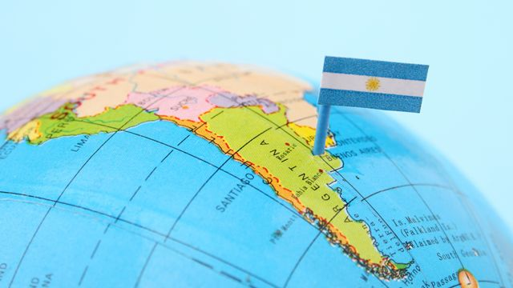

¿Qué lugar ocupa la Ciudad de Buenos Aires en el mundo? El top 5 a nivel global está encabezado por Londres, Munich, Seúl, Tokio y Berlín. Buenos Aires alcanzó su mejor marca desde que se publica el ranking y se ubicó en el puesto 22, por encima de ciudades como Madrid y Barcelona.
América del Sur, también llamado Sudamérica o Suramérica, es el subcontinente sur de América. Está atravesado por el ecuador terrestre en su extremo norte, quedando así con la mayor parte de su territorio comprendida dentro del Hemisferio Sur. Está situado entre el Océano Atlántico y el Océano Pacífico.
